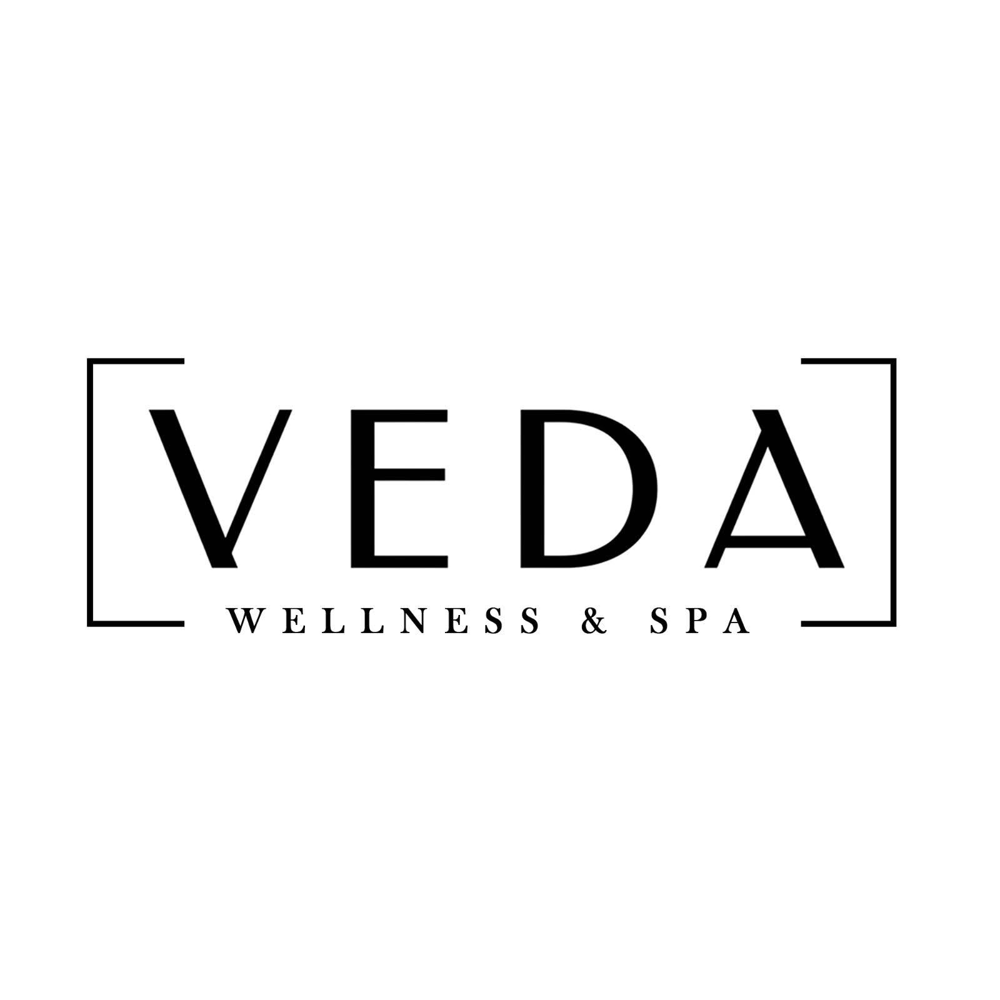

Signature relaxation massage
A gentle, unhurried massage with pressure adapted to your comfort. A thoughtful choice when you simply need to unwind.

Plan your visitA SPACE TO SLOW DOWN
Wellness care. Aesthetic services. Restorative spa rituals.
Time that belongs entirely to you.
WELCOME TO VEDA
Some days call for a quiet pause. Others call for a fresh start. At Veda, we bring wellness consultations, aesthetic services and spa experiences together, so you can choose the care that feels right for you.
We start by listening. Your preferences, comfort and goals shape your experience, from the first conversation to the final moment of rest.
FIND YOUR MOMENT
Choose a focus. Explore a gentler pace.
A gentle, unhurried massage with pressure adapted to your comfort. A thoughtful choice when you simply need to unwind.
Targeted attention to the areas that feel tight or tired, with a conversation about your preferences before the session.
A cleansing and nourishing ritual selected around your skin’s needs, with a calm touch and time to relax.
A refreshing exfoliation followed by moisturising care, leaving your skin feeling soft and comfortably nourished.
A one-to-one conversation about your routines, wellbeing goals and preferences, to help you choose your next steps.
Pair a relaxation massage with a facial ritual for a longer pause. A little more time to settle in and switch off.
Discuss your skin concerns, appearance goals and treatment preferences in a personalised consultation. Explore suitable options, expected outcomes and aftercare before deciding.
Explore options for reducing unwanted facial or body hair over a course of sessions. Treatment areas and suitability require a clinical assessment.
Discuss peel options for concerns such as uneven tone, dullness and skin texture. The appropriate peel and aftercare depend on your skin assessment.
A consultation focused on breakouts, post-acne marks, dark spots or uneven tone, with a personalised discussion of care options.
Explore cleansing, exfoliation and hydration options chosen around your skin type and comfort.
Discuss fine lines, texture and acne scars, including whether options such as microneedling or skin-tightening treatments are appropriate.
Explore haircuts, blow-dries, root touch-ups, full colour and highlights, with a consultation about your preferred look.
A proposed menu of conditioning rituals and scalp-care sessions for your hair-care routine.
Explore manicure, pedicure, waxing, threading and occasion styling options.
Choose a relaxation-focused massage and discuss your preferred pressure, oils and any sensitivities before the session.
A body exfoliation and bathing experience inspired by the Turkish hammam tradition. Enquire about the available ritual and facilities.
THE VEDA APPROACH
Tell us what you need today. We help you choose an experience around your comfort.
Share your pressure preferences, sensitivities and questions at any point in your session.
Take a moment before returning to your day, with simple guidance for after your treatment.
GOOD TO KNOW
Start with how you would like to feel: relaxed, refreshed or more focused on your wellbeing. A consultation can help you discuss your goals before selecting a session.
Please share any health conditions, pregnancy, recent procedures, allergies or skin sensitivities. The suitability of a treatment should be confirmed before your appointment.
You are welcome to ask questions throughout. Discuss your comfort, pressure and privacy preferences before the session starts.
Choose an aesthetic consultation by calling the team. Discuss your concerns and goals with the team so they can explain the available services, suitability, expected outcomes and aftercare.
Allow around 15 minutes before your appointment so you have time to settle in and discuss your preferences.
VISIT VEDA · GUWAHATI
Call the team to discuss services, availability and appointments.
Call +91 87230 88888Listed hours: 10:00 AM–8:00 PM, daily.
Weekend hours differ across listings. Please call to confirm before visiting.
Opposite Landmark Hotel · Near Nehru Stadium